С помощью ConstraintSet вы можете программно создавать привязки, цепочки, барьеры и настраивать их.
Полный список операций можно посмотреть в официальной документации. Я рассмотрю некоторые из них.
Для примеров я буду использовать такой код:
import android.os.Bundle;
import android.support.constraint.ConstraintLayout;
import android.support.constraint.ConstraintSet;
import android.support.transition.TransitionManager;
import android.support.v7.app.AppCompatActivity;
import butterknife.BindDimen;
import butterknife.BindView;
import butterknife.ButterKnife;
import butterknife.OnClick;
public class MainActivity extends AppCompatActivity {
@BindView(R.id.container)
ConstraintLayout constraintLayout;
@BindDimen(R.dimen.some_margin)
int someMargin;
@Override
protected void onCreate(Bundle savedInstanceState) {
super.onCreate(savedInstanceState);
setContentView(R.layout.activity_main);
ButterKnife.bind(this);
}
@OnClick(R.id.button)
void onButtonClick() {
ConstraintSet set = new ConstraintSet();
// copy constraints settings from current ConstraintLayout to set
set.clone(constraintLayout);
// change constraints settings
changeConstraints(set);
// enable animation
TransitionManager.beginDelayedTransition(constraintLayout);
// apply constraints settings from set to current ConstraintLayout
set.applyTo(constraintLayout);
}
private void changeConstraints(ConstraintSet set) {
}
}
В коде немного используется библиотека ButterKnife. Если вы еще не слышали про нее, рекомендую почитать обзор. Но в целом и так примерно понятно, что она делает.
Метод onButtonClick будет вызываться при нажатии на кнопку. В нем мы создаем ConstraintSet и методом clone читаем в него настройки текущего ConstraintLayout, который сейчас отображается на экране. В методе changeConstraints мы будем менять настройки, а затем, методом applyTo применять эти настройки к текущему ConstraintLayout.
Т.е. считали настройки, что-то поменяли, и обратно записали. Внесенные нами изменения будут сразу отображены на экране. А TransitionManager добавит к этим изменениям анимацию.
В values.xml создана переменная some_margin
<resources>
<dimen name="some_margin">32dp</dimen>
</resources>
ButterKnife помещает ее значение в переменную someMargin. Иногда я буду использовать это значение для отступов.
Создание привязки (connect)
Рассмотрим такой экран
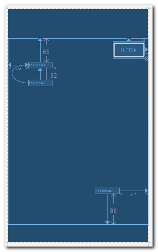
TextView3 привязано к TextView1.
Давайте программно отвяжем TextView3 от TextView1 и привяжем к TextView2.
private void changeConstraints(ConstraintSet set) {
set.clear(R.id.textView3, ConstraintSet.LEFT);
set.clear(R.id.textView3, ConstraintSet.TOP);
set.connect(R.id.textView3, ConstraintSet.LEFT, R.id.textView2, ConstraintSet.LEFT);
set.connect(R.id.textView3, ConstraintSet.BOTTOM, R.id.textView2, ConstraintSet.TOP, someMargin);
}
Методом clear удаляем левую и верхнюю привязки для TextView3. Методом connect сначала привязываем левую границу TextView3 к левой границе TextView2, а затем нижнюю границу TextView3 к верхней границе TextView2. Для вертикальной привязки сразу указываем отступ.
Запускаем
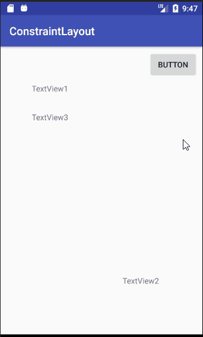
TextView3 отвязался от TextView1 и привязался к TextView2.
В принципе, можно было не вызывать метод clear для левой привязки TextView3, т.к. мы ее потом создавали новую левую привязку и старая привязка (к TextView1) удалилась бы сама.
В методе connect мы указывали id View, с которыми работали. Чтобы создать привязку к родителю, можно вместо id использовать константу ConstraintSet.PARENT_ID.
set.connect(R.id.textView3, ConstraintSet.LEFT, ConstraintSet.PARENT_ID, ConstraintSet.LEFT, 0);
set.connect(R.id.textView3, ConstraintSet.RIGHT, ConstraintSet.PARENT_ID, ConstraintSet.RIGHT, 0);
Настройка ширины (constrainWidth)
Рассмотрим такой экран
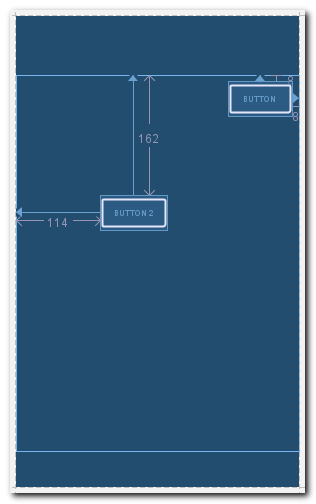
Установим для кнопки Button2 ширину на весь экран. Для этого необходимо создать двустороннюю горизонтальную привязку к краям родителя и ширину установить match_constraint.
Слева кнопка Button2 уже привязана к родителю. Поэтому надо будет создать только правую привязку.
set.setMargin(R.id.button2, ConstraintSet.START, 0);
set.connect(R.id.button2, ConstraintSet.RIGHT, ConstraintSet.PARENT_ID, ConstraintSet.RIGHT, 0);
set.constrainWidth(R.id.button2, ConstraintSet.MATCH_CONSTRAINT);Методом setMargin обнуляем левый отступ, методом connect создаем правую привязку к родителю, и методом constrainWidth ставим ширину match_constraint.
Запускаем

Аналогично есть метод для настройки высоты - constrainHeight.
bias
bias - это тот самый скролл в верхней части Properties, который позволяет указать, к какой стороне будет ближе располагаться View при двусторонней привязке.
Используем тот же пример с Button2. Создадим правую привязку к родителю, чтобы получилась двусторонняя горизонтальная привязка и установим значение bias = 75%.
set.setMargin(R.id.button2, ConstraintSet.START, 0);
set.connect(R.id.button2, ConstraintSet.RIGHT, ConstraintSet.PARENT_ID, ConstraintSet.RIGHT, 0);
set.setHorizontalBias(R.id.button2, 0.7f);
Запускаем
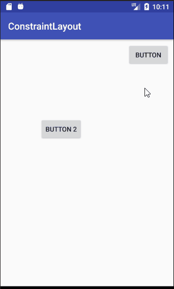
Изменения на экране выглядят незначительными, но раньше кнопка имела фиксированный отступ от левого края, а теперь она расположена на три четверти ширины экрана от левого края. Абсолютный отступ мы поменяли на относительный.
ConstraintSet содержит методы centerHorizontally и centerVertically. Они позволяют сразу создать двусторонние привязки и указать значение bias. Они сделаны, чтобы вам писать меньше кода. Под капотом там будут вызовы методов connect и setHorizontalBias.
Цепочки (chains)
Рассмотрим такой экран
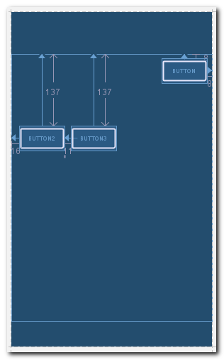
Программно соединим Button2 и Button3 в горизонтальную цепочку, растянем их на весь экран, и укажем им weight 3 и 2 соответственно.
set.setMargin(R.id.button2, ConstraintSet.START, 0);
set.setMargin(R.id.button3, ConstraintSet.START, 0);
set.constrainWidth(R.id.button2, ConstraintSet.MATCH_CONSTRAINT);
set.constrainWidth(R.id.button3, ConstraintSet.MATCH_CONSTRAINT);
int[] chainViews = {R.id.button2, R.id.button3};
float[] chainWeights = {3, 2};
set.createHorizontalChain(ConstraintSet.PARENT_ID, ConstraintSet.LEFT,
ConstraintSet.PARENT_ID, ConstraintSet.RIGHT,
chainViews, chainWeights,
ConstraintSet.CHAIN_SPREAD);
Сначала убираем левые отступы методом setMargin. Затем настраиваем ширину match_constraint, чтобы можно было применить вес.
В массиве chainViews указываем View, которые надо объединить в цепочку. В массиве chainWeights указываем веса для View из chainViews.
В методе createHorizontalChain указываем, что цепочка должна быть привязана к родителю слева и справа, и тип цепочки должен быть spread.
Если вам не надо указывать вес, то вместо chainWeights передавайте null. Ну и ширину в этом случае необязательно ставить в match_constraint
Запускаем
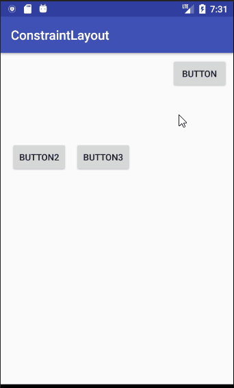
Небольшое уточнение. В методе createHorizontalChain есть ошибка, которая приводит к тому, что для первого View из массива chainViews не будет установлен вес из chainWeights. Возможно, в будущих версиях ее поправят. А пока можно просто установить вес вручную методом setHorizontalWeight
set.setHorizontalWeight(R.id.button2, 3);Для удаления или добавления View в существующие цепочки, используйте методы removeFromHorizontalChain и addToHorizontalChain.
Направляющие (guideline)
Рассмотрим такой экран
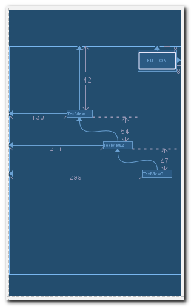
Создадим вертикальную направляющую и привяжем к ней все три TextView
set.create(R.id.guideline, ConstraintSet.VERTICAL_GUIDELINE);
set.setGuidelinePercent(R.id.guideline, 0.2f);
set.connect(R.id.textView, ConstraintSet.LEFT, R.id.guideline, ConstraintSet.RIGHT, 0);
set.connect(R.id.textView2, ConstraintSet.LEFT, R.id.guideline, ConstraintSet.RIGHT, 0);
set.connect(R.id.textView3, ConstraintSet.LEFT, R.id.guideline, ConstraintSet.RIGHT, 0);
set.setMargin(R.id.textView, ConstraintSet.START, 0);
set.setMargin(R.id.textView2, ConstraintSet.START, 0);
set.setMargin(R.id.textView3, ConstraintSet.START, 0);Методом create создаем вертикальную направляющую и методом setGuidelinePercent указываем, что она будет расположена с отступом в 20% от ширины экрана.
Далее методом connect привязываем все TextView и методом setMargin обнуляем все отступы для них.
В values.xml создана переменная guideline
<resources>
<item name="guideline" type="id">1</item>
</resources>
Запускаем
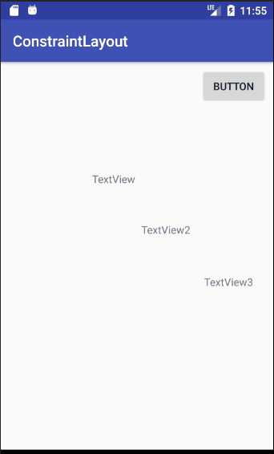
clone
Методом clone мы можем считывать настройки не только из текущего ConstrainLayout, но и из layout-файла.
Допустим у нас есть два layout-файла
1) activity_main
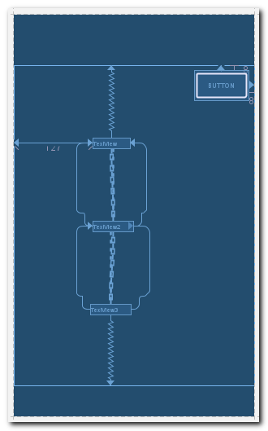
Это основной layout, который будет использован при запуске.
2) activity_main2
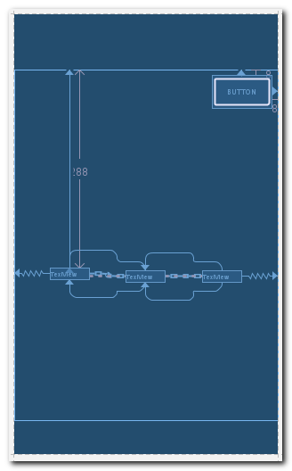
Этот экран мы будем считывать из layout файла и программно применять к текущему экрану.
Код Activity:
public class MainActivity extends AppCompatActivity {
private final ConstraintSet set = new ConstraintSet();
private final ConstraintSet set2 = new ConstraintSet();
private ConstraintLayout constraintLayout;
private ConstraintSet currentSet;
@Override
protected void onCreate(Bundle savedInstanceState) {
super.onCreate(savedInstanceState);
setContentView(R.layout.activity_main);
constraintLayout = (ConstraintLayout) findViewById(R.id.container);
// copy constraints settings from current ConstraintLayout to set
set.clone(constraintLayout);
// copy constraints settings from activity_main2 to set2
set2.clone(MainActivity.this, R.layout.activity_main2);
currentSet = set;
findViewById(R.id.button).setOnClickListener(new View.OnClickListener() {
@Override
public void onClick(View v) {
// change current set
currentSet = (currentSet == set ? set2 : set);
// enable animation
TransitionManager.beginDelayedTransition(constraintLayout);
// apply settings to current ConstraintLayout
currentSet.applyTo(constraintLayout);
}
});
}
}
В переменную set мы читаем настройки текущего ConstraintLayout, который был создан из activity_main. В set2 читаем настройки ConstraintLayout из layout-файла activity_main2.
По нажатию кнопки мы в currentSet помещаем поочередно set или set2, и применяем эти настройки к текущему ConstraintLayout. Т.е. экран будет переключаться между начальными настройками и настройками из activity_main2.
Запускаем
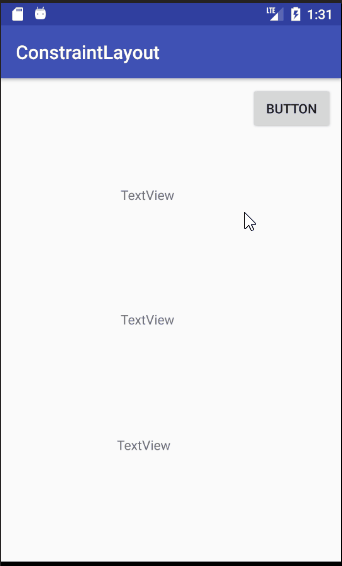
Чтобы использовать TransitionManager для API < 19 используйте support версию
compile 'com.android.support:transition:25.3.1'